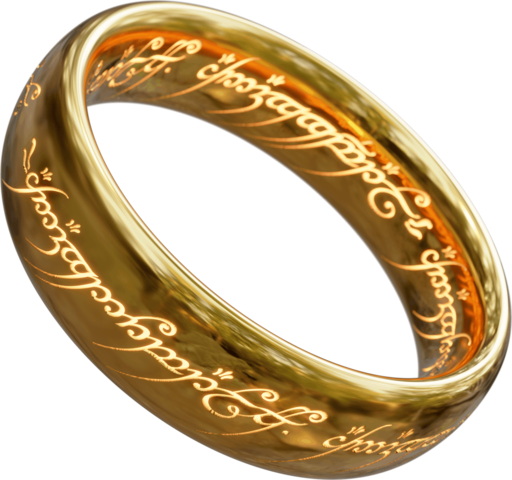

WebHID API: Control Everything via USB
Nikita Dubko
, Web Standards
WebHID API: Control Everything via USB
Nikita Dubko, Web Standards

GDE Directory
Knowledge 🪄
How it all began...
Frontend is not real programming!!!
Somebody from Twitter
You don't have an access to real devices!
Really?
HID
usb.org
H
uman
I
nterface
D
evices
Keyboards, mice, game controllers, etc.
USB + Bluetooth HID-Class
Drivers
https://en.wikipedia.org/wiki/File:Operating_system_placement.svg
https://github.com/libusb/hidapi
125Hz Polling
Connection -> Enumeration
https://www.silabs.com/documents/public/application-notes/AN249.pdf
https://www.usb.org/sites/default/files/hid1_11.pdf
Input Reports, Feature Reports and Output Reports
Poll -> Have something? -> Send
Push -> SET_FEATURE
Push -> SET_REPORT
A lot of numbers
Debug with https://www.wireshark.org/
Fear!
https://gist.github.com/cliffrowley/d18a9c4569537b195f2b1eb6c68469e0
https://github.com/Julusian/node-elgato-stream-deck
Browsers use HID a lot!
https://source.chromium.org/chromium/chromium/src/+/main:services/device/public/mojom/hid.mojom
Mouse, keyboards, gamepads
WebHID
Browser API
Is not a W3C Standard
Chrome 89+ https://chromestatus.com/feature/5172464636133376
Mozilla https://github.com/mozilla/standards-positions/issues/459
Safari https://webkit.org/tracking-prevention/
Doesn't work with trusted input
https://source.chromium.org/chromium/chromium/src/+/main:services/device/public/cpp/hid/hid_usage_and_page.cc
Requires user gesture to allow
https://wicg.github.io/webhid/
https://github.com/WICG/webhid/blob/main/EXPLAINER.md
How to work with HID?
navigator.hid
Examples https://web.dev/hid-examples/
Sony DualShock 4: https://github.com/TheBITLINK/WebHID-DS4
https://www.psdevwiki.com/ps4/DS4-USB
Materials https://github.com/robatwilliams/awesome-webhid
https://web.dev/hid/
https://devicehunt.com/all-usb-vendors
https://www.the-sz.com/products/usbid/
about://device-log
Google Meet + Elgato: https://github.com/petele/StreamDeck-Meet
Frontend Power!
mefody.dev/talks/webhid/
@dark_mefody
n.a.dubko@gmail.com
 GDE Directory
GDE Directory
GDE Directory
GDE Directory